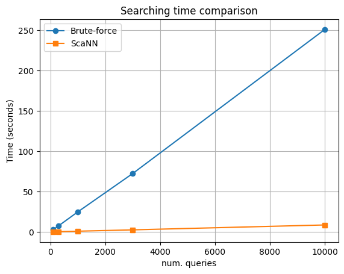

Overview
This project implements and benchmarks ScaNN (Scalable Nearest Neighbors), a state-of-the-art algorithm for high‑dimensional Approximate Nearest Neighbor (ANN) search. The goal is to evaluate performance, understand trade‑offs, and provide a clean reference implementation useful for semantic retrieval, recommendation systems, and large‑scale embedding search.
ScaNN combines tree‑based partitioning with asymmetric hashing to achieve sub‑linear search times while maintaining high recall. It is designed to scale to millions of vectors and can be customized for different accuracy and latency requirements.
As you explore this page, you'll find sections detailing the features of ScaNN, quick start instructions, benchmark results, and information about the project team.
Additional findings and insights will be included in the group's report.
Key Features
- High‑speed approximate vector search
- Customizable tree and asymmetric hashing configurations
- Scalable to millions of vectors (as in the name: Scalable Nearest Neighbors)
- Suitable for semantic search, RAG systems, and recommendations
Links
Use our Colab's notebook for a detailed demo and benchmarking tools. The notebook has detailed instruction to run the cells.
Our GitHub repository is available  GitHub,
containing the full source code.
GitHub,
containing the full source code.
The demo for arbitrary querying is found here.
Benchmark Results
The following results were obtained using dataset Deep1B, which contains 10 million of 96-dimensional embeddings (roughly 3.66 GB in size). Using this, we compare brute-force search with our optimized ScaNN index.
ScaNN Index Configuration
K_NEIGHBORS = 10
TEST_SIZES = [100, 300, 1000, 3000, 10000] # Test size list for benchmarking.
num_leaves = max(int(sqrt(num_headlines)), 100)
num_leaves_to_search = max(int(num_leaves * 0.05), 10)
training_sample_size = min(int(num_headlines * 0.3), num_headlines - 1)
reordering_candidates = K_NEIGHBORS * 10
Index Statistics
- Raw embedding memory usage: 3658.45 MB
- ScaNN index memory usage: 3873.32 MB
- Compression ratio: 0.945×
Query Benchmark Table
| Num. Queries | Recall@10 | Brute Force Time (s) | ScaNN Time (s) | Speedup |
|---|---|---|---|---|
| 100 | 0.974000 | 2.743362 | 0.092221 | 29.7477× |
| 300 | 0.984000 | 7.553299 | 0.261117 | 28.9268× |
| 1000 | 0.985200 | 24.820713 | 0.845117 | 29.3696× |
| 3000 | 0.984267 | 72.377175 | 2.498513 | 28.9681× |
| 10000 | 0.984340 | 251.051538 | 8.585174 | 29.2425× |
The results show that ScaNN consistently achieves ~29× faster search than brute-force while maintaining ≈0.98 recall@10.
Search Time Comparison Plot
The following plot visualizes the difference in search latency:
However, note that, using the default parameters provided in the Colab notebook, recall value as well as speedup differ wildly as compared to other datasets. Further parameter tuning may be required to achieve optimal performance for each use case.
More detailed analysis and additional benchmarks will be included in the final report.
Team - Group 5
- Nguyễn An Nhật - 2412473
- Mang Viên Bình Minh - 2412066
- Nguyễn Đình Nam - 2412172
Instructor
Dr. Lê Thành Sách, CSE-HCMUT